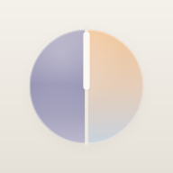

今天
月
‹
›
四象限
按优先级查看所有事件
显示已完成
课表
导入
‹
›
还原
本周
更换

月历
今日
1
日历
四象限
设置
新建事件
已完成
删除
清空
批量
添加
优先级
日期
选择日期
日历
滚轮
取消
批量添加
添加
名称必填；不选优先级默认为灰色；备注可不填。
＋ 再加一行
日期
时间段
取消
确定
取消
导入课表
导入
完成
月历不再使用开屏密码。最后输入一次原来的密码，之后打开就不用了。
完成
忘记密码（重新粘贴令牌即可）